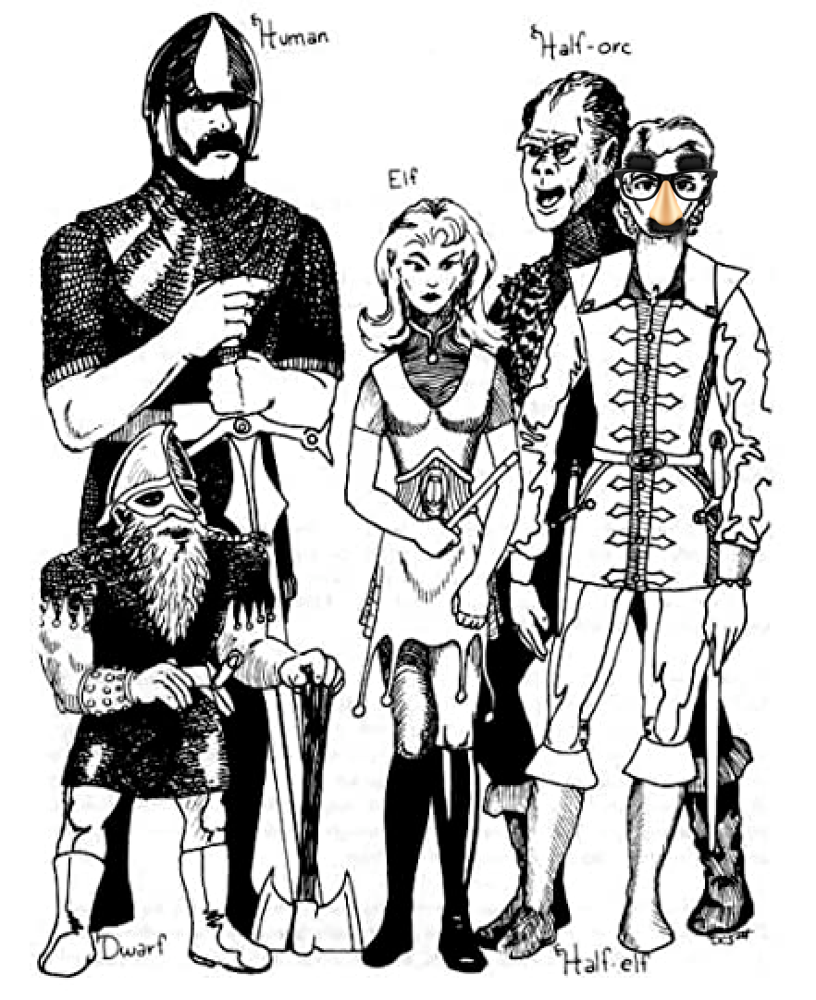

Everyday Systems: Podcast : Episode 73
Demihuman
“Imposter syndrome” – everybody’s got it nowadays. We’re all fakin’ it till we make it. I even have my own everyday systems tongue-in-cheek version of this – posifactive.
The problem? Do we ever make it? Can we ever stop fakin’ it? When does it end?
And do we really believe that everyone else is fakin’ it? I don’t think so. At least, not like we are. This may be the one thing we feel confident and genuine about: we’re the real imposters. They’re just bullshit imposters. They’re fakin’ their fakin’ it.
We may even take a perverse pride in this. And that’s partially OK, to take pride in it. For people as miserable as imposters it’s important to feel good about something, right? You’ve got to give us that at least!
Nietzsche wrote, “he who despises himself still respects himself as a despiser.”
Or auf Deutsch: “Wer sich selbst verachtet, achtet sich doch immer noch dabei als Verächter.”
But, no offense to Nietzsche, in this case at least, it’s the wrong kind of pride or respect.
Today I suggest a clearer-eyed, and more appropriate pride: limited, gently self-deprecating, healthier – inspired, once again, by an evocative term from the 1970s vintage Dungeons & Dragons I played in my youth. I call it Demihuman: a lighthearted approach to imposter syndrome.
Demihumans, as you may recall, were the creatures who were kinda sorta like humans but not quite that populated the imaginative world of Dungeons & Dragons, which was largely ripped off from the Lord of the Rings (so if you know your J.R.R. Tolkein but not your E. Gary Gygax, for the purposes of this podcast, you’re all set). They were the elves, gnomes, dwarves, halflings aka hobbits, half-orcs, etc., whom you could “role play” alongside regular humans.
Now “demi-,” that prefix, makes them sound lesser or bad, but in the game, though they weren’t as good as humans in some ways, they had severe constraints on what classes they could be (so what jobs they could have, more or less) and what levels they could rise to in these classes, they also had compensating advantages: infravision, the ability to see the infrared spectrum, so they could see in the dark (for some reason they could all do this, all the different kinds of demihumans, I guess because they lived underground), the ability to multiclass was another one, so, to be a fighter and a magic user at the same time, humans could just be one or the other. So they weren’t just sub-humans (though they were that, too). In some ways, they were superhumans.
So how does this apply to imposter syndrome?
Well, let’s say, next time you are freaking out that you are an imposter, that you are a small-scale, unintentional Bernie Madoff who has somehow, defensively, without quite meaning to, erected a Potemkin Village of a false life or career that is about to come crashing down on you and the people you love at any moment, when you feel not only like an imposter in terms of your professional competence, but even in terms of ordinary human competence, like you are deeply, to your bones, a fuckup, a fraud, a mini-Bernie Madoff, an alien, a monster, let’s say then, instead of tormenting yourself about it, you say, “wait a minute, it’s OK, I’m not a monster – I’m a demihuman.” There’s a subtle but important distinction.
“Maybe I don’t have all the ordinary human competencies. Maybe I have to live in the dark sometimes, in subterranean passageways. But I can see in the dark. I’ve got infravision. I have special compensatory abilities. And in an extremely retro-dorky kind of way, I’m kind of cool.”
You might think this is an odd kind of positivity, demihuman, but it’s a kind of positivity you can believe and accept in your degraded state. When you’re on the floor – maybe sub basements beneath the floor, in deep dungeons of self-doubt and self-loathing – you’re not going to be able to buy straight up positive self-affirmations. They’ll make you feel like you’re bullshitting yourself.
But “demihuman” is sufficiently inglorious, sufficiently compromised that you may just be able to see yourself as one of these creatures. It’s an image that provides a plausible positivity. It almost sounds like an insult. So the self-hating part of you will let it by. Your internal Mordor is going to be on its guard against a great hero but perhaps not against a little hobbit. That’s one advantage of this image.
Another advantage is that it’s a little ridiculous, so it punctures the dreadful seriousness of your catastrophizing. Laughter is the best weapon against tyrants, even internal ones.
Another advantage is that it acknowledges the reality that you are playing a role. Dungeons & Dragons is a role playing game after all. Instead of freaking out about this and “saying, oh no, I’m putting on an act, a charade, I’m an imposter!” you can say, “well of course I’m putting on an act of sorts, I’m playing a role in society. It’s OK. That’s how it works. All the world’s a role playing game and all the men and women merely player characters in it.”
One of my favorite stories about imposter syndrome is that apparently Vladimir Horowitz, the great concert pianist, had imposter syndrome. Somehow he thought he was fooling the world into thinking he was a great pianist. This is utterly crazy because how on earth could he be faking anything? He was a performer. He was on stage. He was doing the thing he was supposedly pretending to be doing in front of the whole world. The performance was the thing itself. That’s what a performer does: he performs. And yet somehow his psyche had him convinced that he was fooling everyone, that he would be found out some day and exposed as a fraud.
My takeaway from this story is that if Vladimir Horowitz, one of the greatest pianists of all time, could have imposter syndrome with zero supporting evidence and zero possibility even, I’m not going to give myself too hard a time for sometimes succumbing to the same temptation with at least some evidence or possibility.
Finally, the last benefit of Demihuman is that it nudges you to find and focus on a strength. Demihumans, remember, have their special compensating powers. What might yours be? Demihuman gives you credit for whatever you can do to match the ordinary level of human competence even if by unusual means, and to appreciate your efforts as something remarkable. Remember the episode I did on How to be Ordinary? Well, Demihuman can be a step in that direction.
This also overlaps with VC Cat. Your demihuman efforts, small and strange as they may be, can register as super-heroic in eyes of the Great Dungeon Master in the Sky.
So to quickly recap and list the benefits of Demihuman:
1) plausible positivity
2) deescalating humor
3) accepting and embracing the performative aspects of life instead of being freaked out by them
4) finding and focusing on [and getting fired up about] your compensating power to bring you back up to the ordinary level of human functioning
As a bonus, there are some specific ways in which Demihuman can help with other everyday systems you may be practicing or struggling with. If you’re struggling to see what your compensating superpower is, you can find some good candidates here.
The first way, the more straightforward way, that Demihuman resonates with Everyday Systems, is this: Everyday Systems are not for superhumans, straight-up superhumans at least. The No S Diet is not going to turn you into a supermodel. Shovelglove is not going to turn you into He-man. These are sort of ridiculous goals so maybe who cares, but I’m going to go further: I’m not even sure Everyday Systems are for ordinary humans. They’re more for aspiring ordinary humans – demihumans.
Normal humans, healthy humans with good instincts do things right by first nature, they have moderate appetites. They don’t need a system to diet because they really can “listen to their bodies” and eat moderately. They don’t need to remind themselves to stop drinking after two modest glasses of wine – they just don’t want any more. Normal humans can remember people’s names without having to make spaced repetition flashcards. They have good instincts, good intuitions. They don’t need a system for everything. It comes naturally.
I would love to be such a normal human. But I’m not, at least, not by nature. On every single axis I just mentioned, and I could mention a lot more, my instincts are poor. I want what is bad for me. I cannot – or could not – function well without systematic correction.
Are you a normal human? Maybe in some dimension. Maybe you’re not burdened with all of these deficiencies. But I’m guessing, if you’re listening to this podcast, that you’ve got at least a little demihuman in you. At least one barely in-control appetite or one specific area in which you feel so deficient that you wonder if you’re even a fully fledged member of homo sapiens sapiens.
Everyday Systems can help. They can help you function as an ordinary human being, at least externally. They can even, in some cases, re-train your appetites and intuitions so they approach or reach the ordinary human level. This is because they work on building habits. They renaturalize you. They start as conscious systems, using explicit rules to mimic how ordinary humans behave unconsciously, and eventually they become automatic and unconscious, at least to a degree. Sometimes they become so automatic you really do feel like you may have reached ordinary human level. This is how it’s been with me and the No S Diet. I really might be able to do without the No S Diet system at this point in my life. But it's so easy for me, after all these years of practice, that it barely feels like a system at all. So I don’t mind keeping the rules in place just as a safeguard against backsliding.
So that’s the ideal. A system that is so effective that it weans you off even needing it. A system that helps you graduate from a demihuman who needs a system to an ordinary human who does not.
But there are other areas in which even after years of systematic good behavior, good habits, it's still a struggle. For me, Glass Ceiling is one of these. I’m pretty sure I’m always going to need a conscious system to keep my alcohol consumption in check. But I’m OK with that. The alternative is so much worse. It’s a question of where am I going to be struggling – at the border between zero drinks and one drink a day, or between two and three a day, etc. It’s going to be a struggle – the question is where is the struggle going to happen. With me, these days, it’s deep into enemy territory. A slip up means some small part of the vast progress I’ve made gives ground. But I’ve pushed the front lines so deep into enemy territory that it’s not really a problem, no ill effects come from up. I don’t get intoxicated, I just get a little embarrassed that I still have these appetites and that they still sometimes, in some small way, get the better of me. This is still a success – a demihuman success.
Again, I think of VC cat in this context. Given my “raw materials” given where I’m coming from and my nature and “psychological outfit,” I’m fighting the good fight, maybe with more heroism than I am fighting the easier (for me) and more successful battle against excessive eating. I imagine getting that Victoria cross pinned on my dwarfish chest for each small, ridiculous, private victory, and I feel OK about it.
This is all still good Demihuman. It can help and motivate you. Your compensatory power is precisely the ability to compensate, with systems, for your natural deficiencies. It’s like homo sapiens got brains and opposable thumbs to compensate for the fact that they are weak, slow, naked animals – and elves, of course, got infravision.
There is a point at which demihuman thinking can be negative, when you dwell too much on your subhuman deficiencies and compensating superhuman special powers. This makes thematic sense. Some demihumans, in the game, were bad, they were in fact, evil: orcs, dark elves, etc. And I have some thoughts on how to recognize when your demihuman thinking has gone bad and become counterproductive, how you can hopefully catch yourself, and then turn it around again. But that, I’m afraid, is going to have to wait for a separate episode.
Until then, be a good demihuman, and thanks for listening.
© 2002-2023 Everyday Systems LLC, All Rights Reserved.